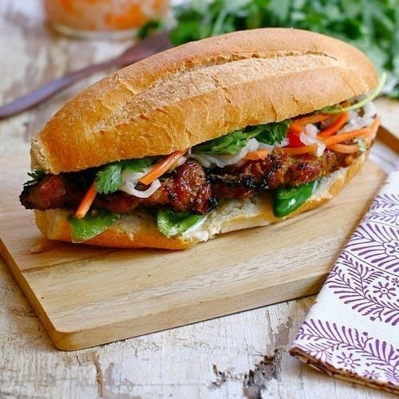
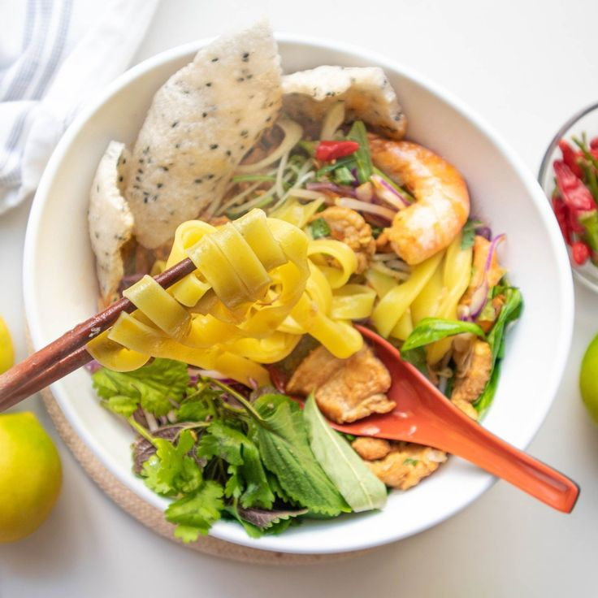
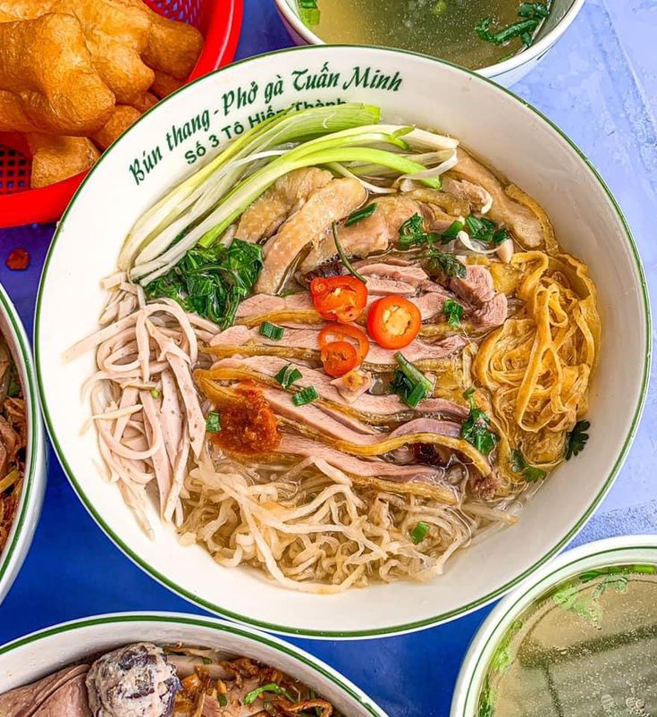

Vietnamese Beef Pho (Phở Bò)
A flavorful beef noodle soup with fresh herbs, spices, and a savory broth.

Bánh mì
A Vietnamese sandwich combining a crispy baguette with savory meats, pickled vegetables, and herbs.

Mi Quang
A vibrant noodle dish with shrimp, pork, herbs, and crunchy peanuts.

Bún Thang
A Hanoi-style noodle soup with chicken, pork, egg, and herbs.

Rau muống
Water spinach stir-fried with garlic or used in soups.